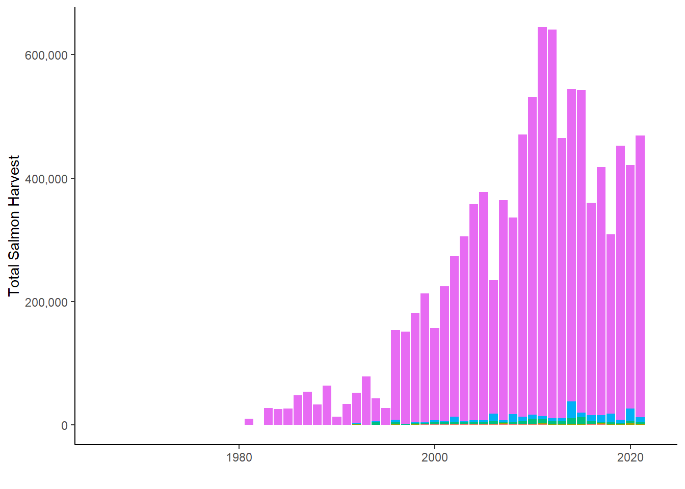

Note on data sources for Northern Kenai Peninsula Fisheries Harvest, from Schoen et al. 2017 supplemental materials:
“Harvest and effort data are reported differently for the commercial, recreational, and personal-use fisheries in Upper Cook Inlet, such that it is not possible to calculate the harvest and effort of salmon produced specifically by the Kenai River (including its tributaries) by each fishing sector. To make comparisons within a common geographic area, we aggregated harvest and effort data from the northern Kenai Peninsula, ranging from the Kasilof River in the south to Ingram Creek in the north. The Kenai River is the predominant salmon-producing river in this area.
We aggregated harvest and effort data from the following fisheries:
Commercial: Central District drift gill net and east-side set gill net (Shields and Dupuis 2016);
Recreational: Northern Kenai Peninsula Management Area (Begich et al. 2013);
Personal-use: Kenai River dip net, Kasilof River dip net, and Kasilof River set net (Fall et al. 2015; Shields and Dupuis 2016). ADF&G also reports harvest and effort for an “unknown” personal-use fishery in Upper Cook Inlet. This harvest and effort was reported on permits on which the fishery was left blank. We allocated this harvest and effort to each known fishery based on the proportions of accurately reported harvest and effort in each year.”
Commercial Harvest
`summarise()` has grouped output by 'species'. You can override using the
`.groups` argument.
Personal Use Harvest
`summarise()` has grouped output by 'species'. You can override using the
`.groups` argument.
`summarise()` has grouped output by 'species'. You can override using the
`.groups` argument.
Joining with `by = join_by(year, harvest_group)`
Warning: Using `size` aesthetic for lines was deprecated in ggplot2 3.4.0.
ℹ Please use `linewidth` instead.
Warning: Removed 61 rows containing missing values or values outside the scale range
(`geom_bar()`).
Warning: Removed 80 rows containing missing values or values outside the scale range
(`geom_line()`).

Sport Harvest
`summarise()` has grouped output by 'year'. You can override using the
`.groups` argument.
Scale for y is already present.
Adding another scale for y, which will replace the existing scale.
Warning: Removed 6 rows containing missing values or values outside the scale range
(`geom_bar()`).
Next:
find updated data sources for sport fish harvest
figure out dual axes to show effort
Idea for NEW overall fig - stacked bar plot of harvest by fishery (& sub stack by species?) superimposed with total harvest … can visualize remaining escapement in context of harvest. –> might be hard to do becuase the above figures do not include solely kenai fish
secondary axes for effort: maybe? https://johnmackintosh.net/blog/2022-03-13-dual-axis/
step 1: recreate fig as is
step 2: show proportional sizes of figs in context of comm
step 3: show stacked proportion by fishery by year
place citations/sources for data below each plot
Source Code
# UCI Salmon Fishery Data Sources {.unnumbered}---execute: echo: falsedate: "`r Sys.Date()`"format: html: code-fold: true code-tools: true code-summary: "Show the code"---```{r, echo = F, message = F}#| warning: false#| message: false# clear environmentrm(list=ls())# load packageslibrary(tidyverse)library(janitor)library(scales)library(magrittr)```# Data Sources```{r echo = F}# harvest trends datasets 1966-2015# https://catalog.epscor.alaska.edu/dataset/commercial-recreational-and-personal-use-harvest-trends-in-the-kenai-river-salmon-fishery-1966-2015# overall run trends datasets 1976-2015# https://catalog.epscor.alaska.edu/dataset/total-run-sizes-of-chinook-and-sockeye-salmon-in-the-kenai-river-1976-2015```Note on data sources for Northern Kenai Peninsula Fisheries Harvest, from Schoen et al. 2017 supplemental materials:"Harvest and effort data are reported differently for the commercial, recreational, and personal-use fisheries in Upper Cook Inlet, such that it is not possible to calculate the harvest and effort of salmon produced specifically by the Kenai River (including its tributaries) by each fishing sector. To make comparisons within a common geographic area, we aggregated harvest and effort data from the northern Kenai Peninsula, ranging from the Kasilof River in the south to Ingram Creek in the north. The Kenai River is the predominant salmon-producing river in this area.We aggregated harvest and effort data from the following fisheries:- Commercial: Central District drift gill net and east-side set gill net (Shields and Dupuis 2016);- Recreational: Northern Kenai Peninsula Management Area (Begich et al. 2013);- Personal-use: Kenai River dip net, Kasilof River dip net, and Kasilof River set net (Fall et al. 2015; Shields and Dupuis 2016). ADF&G also reports harvest and effort for an “unknown” personal-use fishery in Upper Cook Inlet. This harvest and effort was reported on permits on which the fishery was left blank. We allocated this harvest and effort to each known fishery based on the proportions of accurately reported harvest and effort in each year."<br>## Commercial Harvest```{r echo = F}# read in comm fish datadir <-"other/input/harvest_trends/uci-commercial-salmon-harvest.csv"uci_comm <-read.csv(dir) %>%clean_names() %>%# remove percentage columnsselect(-contains(("_2"))) %>%pivot_longer(cols =c("drift","essn","wssn","nsn"), names_to ="fishery", values_to ="count") %>%# consolidate counts from various fisheriesgroup_by(species,year) %>%summarise(total_count =sum(count)) %>%mutate(harvest_group ="Commercial")``````{r echo = F}# comm plotcomm_fig <- uci_comm %>%ggplot() +geom_bar(aes(x = year, y = total_count, fill = species), stat ="identity") +scale_y_continuous(labels =label_comma()) +xlab("") +ylab("Commercial Harvest") +theme_classic()comm_fig# the commercial harvest data set is the longest, so we will make that the axis extent for the other figures toocomm_year_min <-as.numeric(min(uci_comm$year))comm_year_max <-as.numeric(max(uci_comm$year))# for some visualization purposes, we want the y-axis to show the scale of the largest harvest category, commercial. Species are aggregated# comm_harvest_min <- group_by(year) %>% summarise(total_comm_harvest = sum(total_ct)) # throws error# comm_harvest_max# need clarification on and source for effort: number of permits fished. where; both setnet and drift?? check against shields and dupuis and find parallel in lipke & stumpf 2024```<br>## Personal Use Harvest```{r echo = F}# read in pre 1996 PUdir <-"other/input/harvest_trends/puharvest_pre1996.csv"puharvest_pre1996 <-read.csv(dir) %>%clean_names() %>%# prep formatpivot_longer(cols =c("harvest_sockeye","harvest_chinook","harvest_coho","harvest_chum","harvest_pink"), names_to ="species", values_to ="count") %>%select(-harvest_total) %>%# corrected species namesmutate(species =case_when( species =="harvest_sockeye"~"Sockeye", species =="harvest_chinook"~"Chinook", species =="harvest_chum"~"Chum", species =="harvest_pink"~"Pink", species =="harvest_coho"~"Coho")) %>%# consolidate data among fisheries, as the figure does not segregate themgroup_by(species, year) %>%summarise(total_count =sum(count)) %>%transform(year =as.character(year))``````{r echo = F}# read in post 1996 PUdir <-"other/input/harvest_trends/puharvest_post1996.csv"puharvest_post1996 <-read.csv(dir) %>%clean_names() %>%select(-source,-page) %>%# remove commasmutate_all(~sub(",","",.)) %>%# prep formatpivot_longer(cols =c("fish_cr","kasilof_set","kasilof_dip","kenai","unknown"), names_to ="fishery", values_to ="count") %>%transform(count =as.numeric(count)) %>%select(-fishery) %>%# replace all 0 with NAmutate(count =na_if(count,0)) %>%group_by(species, year) %>%# recall to include na.rm = Tsummarise(total_count =sum(count, na.rm = T)) ``````{r echo = F}# combine pre-1996 and post-1996 PU datauci_pu <-bind_rows(puharvest_pre1996,puharvest_post1996) %>%mutate(harvest_group ="Personal Use") # specify order of species for stacked bar chart# uci_pu$species <- factor(uci_pu$species, levels = c("Sockeye","Coho","Chinook","Chum","Pink"))# error: something about about specifying factor/levels causes the effort time series to disappear# PU plotpu_fig <- uci_pu %>%filter(species !="HouseholdDaysFished") %>%ggplot() +geom_bar(aes(x =as.numeric(year), y = total_count, fill = species), position ="stack", stat ="identity") +scale_y_continuous(labels =label_comma()) +xlab("") +ylab("Personal Use Harvest") +xlim(comm_year_min,comm_year_max) +theme_classic()# pu_fig# add secondary axis# experiment w pu fig W 2ndary axis# example# 1) get effort data in new columnuci_pu2 <- uci_pu %>%filter(species =="HouseholdDaysFished") %>%select(-species)colnames(uci_pu2) <-c("year","household_days_fished","harvest_group")uci_pu2 <-left_join(uci_pu,uci_pu2) %>%filter(species !="HouseholdDaysFished")# 2) plot PU fig v2# PU plotscale_factor <-16pu_fig2 <- uci_pu2 %>%filter(species !="HouseholdDaysFished") %>%ggplot() +geom_bar(aes(x =as.numeric(year), y = total_count, fill = species), stat ="identity") +geom_line(aes(x =as.numeric(year), y = household_days_fished * scale_factor), color ="black", size =1.05) +scale_y_continuous(name ="Personal Use Harvest", sec.axis =sec_axis(~ ., labels =number_format(scale=1/scale_factor), name="Effort (Household Days Fished)"),labels = comma) +xlab("") +ylab("Personal Use Harvest") +xlim(comm_year_min,comm_year_max) +theme_classic() +ggtitle("Northern Kenai Peninsula Personal Use Salmon Fishery")pu_fig2# tics on 2ndary y axis# capitalize legend# reverse stack order# match colors# see how this looks as a faceted plot with effort on top ?```<br>## Sport Harvest```{r echo = F}# read in uci sport fish datadir <-"other/input/harvest_trends/sportharvest.csv"uci_sport <-read.csv(dir) %>%clean_names() %>%select(contains(c("year","area","salmon","trout","dolly","grayling","pike","other"))) %>%# consolidate all non-salmon species into "other"rowwise() %>%mutate(other =sum(rainbow_trout, lake_trout, dolly_varden, arctic_grayling, northern_pike, other,na.rm = T)) %>%# remove non-salmon species columnsselect(-rainbow_trout, -lake_trout, -dolly_varden,-arctic_grayling,-northern_pike) %>%pivot_longer(cols =contains(c("salmon","other")),names_to ="species",values_to ="count") %>%# consolidate counts from various fisheries into overall sport fisherygroup_by(year,species) %>%summarise(total_count =sum(count)) %>%# fix species namesmutate(species =case_when( species =="chinook_salmon"~"Chinook", species =="chum_salmon"~"Chum", species =="coho_salmon"~"Coho", species =="pink_salmon"~"Pink", species =="sockeye_salmon"~"Sockeye", species =="other"~"Other")) %>%# name user groupmutate(harvest_group ="Sport")``````{r echo = F}# sport plotsport_fig <- uci_sport %>%ggplot() +geom_bar(aes(x =as.numeric(year), y = total_count, fill = species), stat ="identity") +scale_y_continuous(labels = comma) +xlab("") +ylab("Sport Harvest") +xlim(comm_year_min,comm_year_max) +ylim(0,800000) +theme_classic()sport_fig# effort: Gates et al p55, 1999-2022; begich et al 2013 p 93```Next:- find updated data sources for sport fish harvest- figure out dual axes to show effortIdea for NEW overall fig - stacked bar plot of harvest by fishery (& sub stack by species?) superimposed with total harvest ... can visualize remaining escapement in context of harvest. --> might be hard to do becuase the above figures do not include solely kenai fish- secondary axes for effort: maybe? https://johnmackintosh.net/blog/2022-03-13-dual-axis/- step 1: recreate fig as is- step 2: show proportional sizes of figs in context of comm- step 3: show stacked proportion by fishery by year- place citations/sources for data below each plot